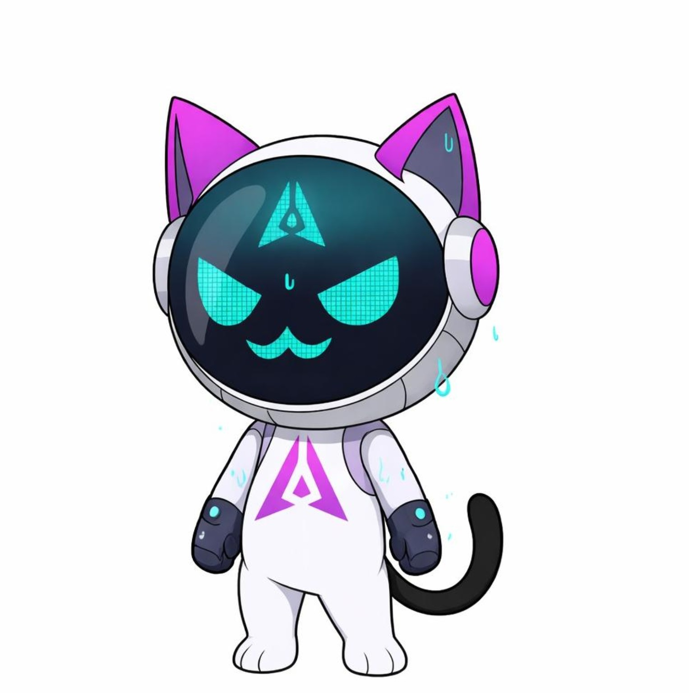

WHERE SHOULD MOCHI STAKE?
VALIDATORS = THE NETWORK’S CHECKERS
STAKE = SKIN IN THE GAME
DELEGATE = BACK A VALIDATOR,
SHARE THE OUTCOME
ALL ON ONE → THE NETWORK TILTS
SPREAD IT → MORE INDEPENDENT VOICES
STAKE CAREFULLY. DELEGATE WISELY.

Stake carefully.
Delegate wisely.